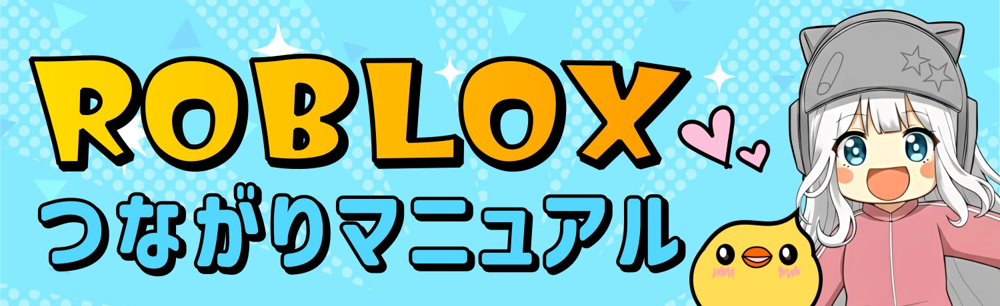
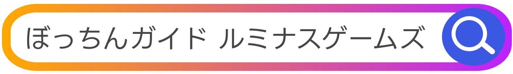
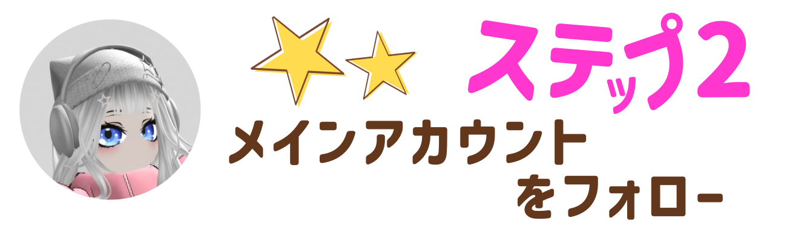
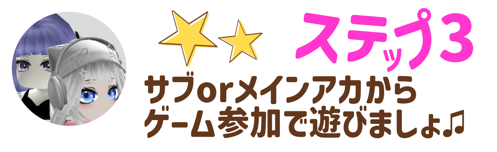
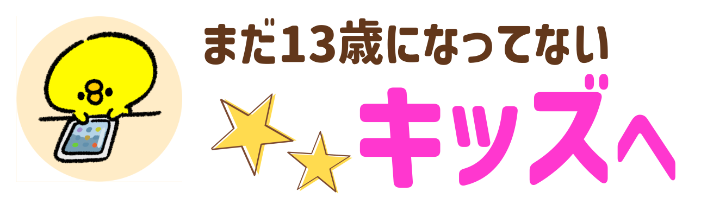

一緒にプレイするには
以下のステップを完了させてね🌠

1️⃣『ぼっちんガイドサブ・るみなだよ』
ロブロID→@bottin_gaidoまでつながりリクエストを送
ってね💙

2️⃣『ぼっちんガイドサブ・ひかりだよ』
ロブロID→@bottin_hikariまでつながりリクエストを送
ってね🐨


どちらも完了させないと
プライベートサーバーに入れません。

募集がきたら
【参加】ボタンを押
して
一緒にプレイ🎵
※サブアカウントはプライベートサーバー立ち上げ後
は退室
する場合があります。

メインアカウント
『ぼっちん』とのつながりは
YouTubeメンバーシップ
or 期間限定
です🐥
Discord内でチャットしながら
プレイ出来るよ♪
『ルミナスゲームズ』では運営を手伝ってくれる仲間も募集中です！

🚫ゲーム内チャットは使用しません。 チャンネル内のライブ予告 『フリーチャット』を使用してね💬
⛔他の参加者が不快になる 行為はしないでください。
⛔プレイ中のフレンド交換、 武器トレードなどのトラブルは 一切責任を負いません。
🎞️プレイ中の様子、 フォロワーさんのアバターを動画の一部に 使用（出演）させてもらう 場合があります。
※出演NGの方は メインアカウント（ぼっちん）へのフォローはしないようにお願いします。

まだ、13歳になっていない人は、必
ずおうちの人にこのページを見せてね。
イベントに参加してもいいか聞いて「いいよ」と
言ってもらってから遊んでね！
【チャット欄の
お約束】
🚫マシンガンみたいにいっぱい連続でコメントをおくるのはやめてね。
🚫ほかの人がイヤな気持ちになるような
言葉は書かないでね。
🚫「お友だちどうしでしかワカラナイ話」はしないでね。
🚫住んでる場所や自分の
本当の名前を
チャットに書いちゃダメだよ。